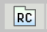

Help and Instructions
The table below includes definitions of and explanations for some of the tools you will find on the Grade 3 Practice Test.When you are taking the test, click on the picture of a tool at the top of the screen to use the tool. When you finish using the tool, click on the picture to put it away again.

• Click on the red “X” icon. Then click the mouse with the pointer on an answer and a red “X” will appear and cross it out.
• Use the eraser tool to clear an “X,” or turn off the option (Answer Choice) eliminator and then click on the answer choice with the normal pointer to select that answer.
• When the option (Answer Choice) eliminator is turned off, you can still click on an answer choice you eliminated if you want to select that answer.

• Hold down the mouse button and drag the highlighter over the area that you wish to highlight.
• Highlighting can be removed with the eraser.

• Click on the eraser icon.
• To erase a red “X,” click on the “X,” and it will disappear.
• When you are done using the eraser, click on the eraser icon again to turn off the eraser tool.

• The numbered box at the bottom of the screen for that question will be shaded yellow.
• Then, instead of “Mark for Later Review,” you should see the word “Unmark.” Click on it and the yellow in the numbered box will disappear.
• Marking questions is not necessary, but it may help you keep track of questions you want to review later.

• Click on the icon that has the letters “RC” on it. The “RC” stands for “Reference Card.”
• Click on the RC icon and the mathematics reference card will open.
• You will need to scroll down to see all of the information. Look at the scroll bar on the right side of the reference sheet. Now scroll down slowly by clicking on the down arrow.

• Click on the icon that has the letters “Calulator” on it.
• Click on the “Calulator” icon and calculator will open.
• You need to click on numbers and symbols to perform calulations.
• Click on the icon that has the letters “Magnifying Glass” on it.
• Click on the “Magnifying Glass” icon and magnigying glass will open.
• You need to keep the magnifying glass on the element you want to magnify.
• Click on the icon that has the letters “Masking Tool” on it.
• Click on the show or hide option which you want to select.
• Click on the icon that has the letters “ScratchPad” on it.
• You can note down question related data or points here.